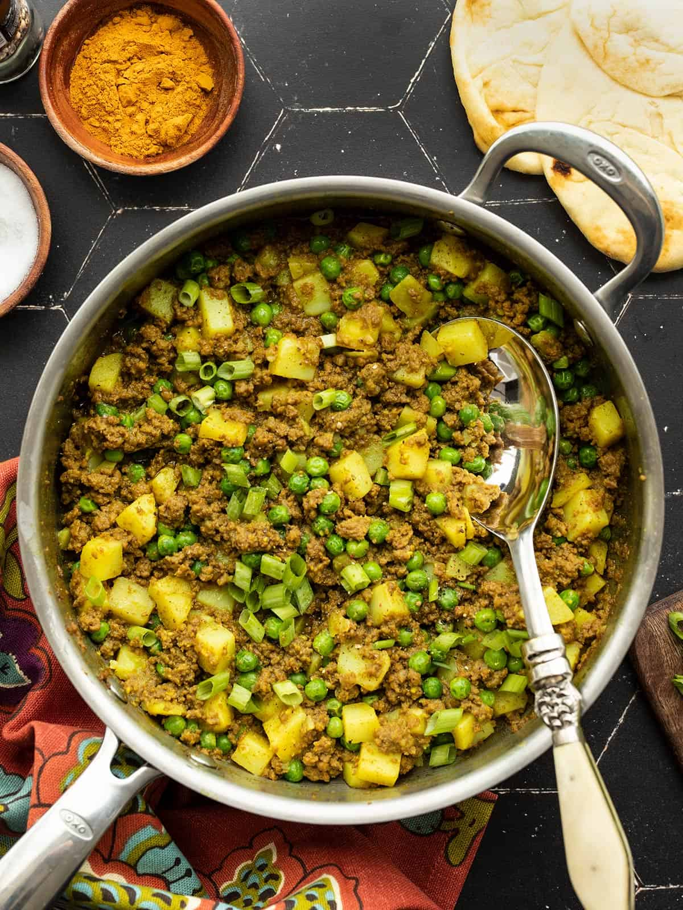

Curried Ground Beef with Peas and Potatoes

Ingredients
- 4 cloves garlic (minced)
- 1 teaspoon ginger (grated)
- 2 tablespoon cooking oil
- 1 tablespoon curry powder
- 1 teaspoon turmeric
- .25 teaspoon crushed red pepper
- 1 pound ground beef
- 1 potato (peel and cubed/.5 inch pieces)
- 1 cup beef broth
- 1 cup frozen peas
- .5 teaspoon salt
- 2 green onions (sliced)
Steps
- Saute garlic and ginger in oil over med heat for 2 minutes
- add spices and saute for one more minute
- add ground beef, saute until cooked through
- add potato and beef broth, stir, place lid and turn heat to med-high
- once boiling, turn down head to med-low and simmer for 10 minutes
- stir in frozen peas, add salt to taste, garnish with green onions